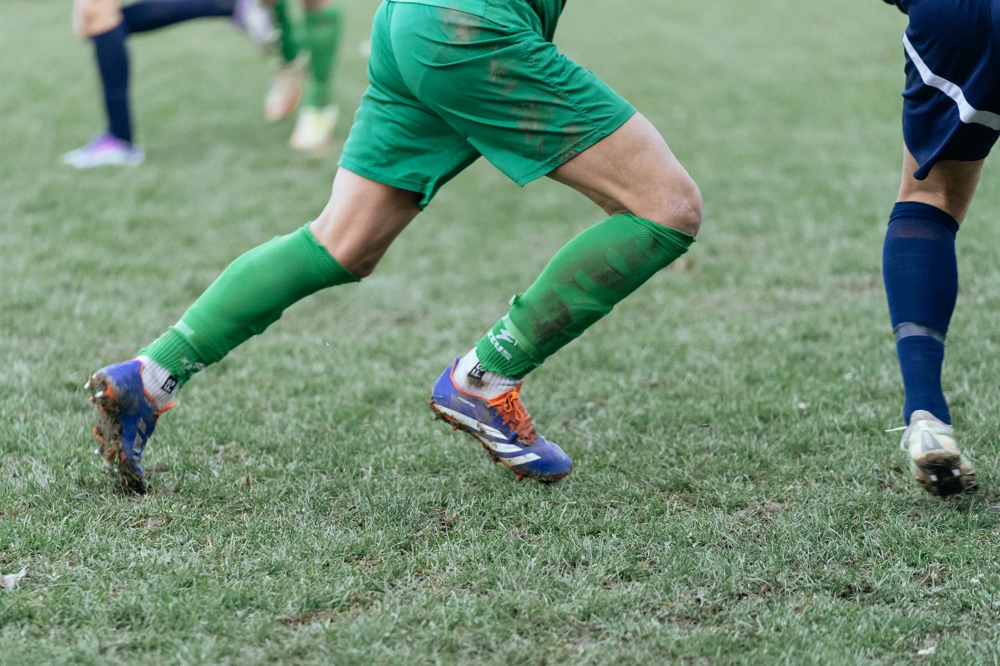
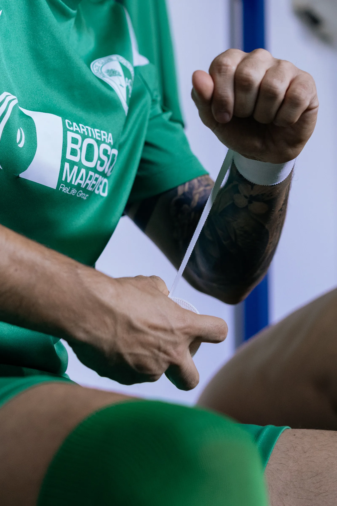
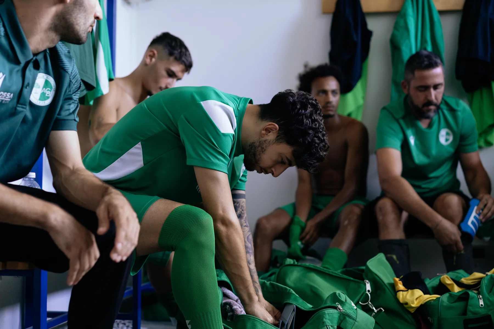
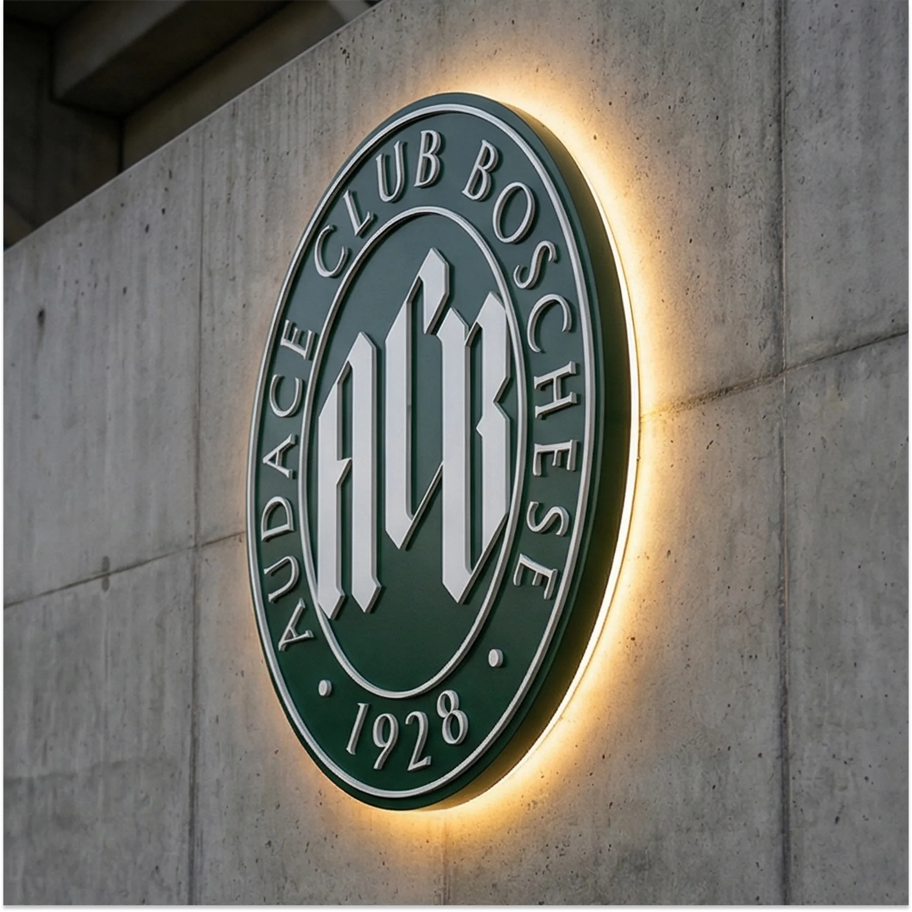

Verde come
il Bosco
L'Audace Club Boschese nasce biancoverde e porta da sempre con sé l'iconografia di un albero: la stilizzazione del Bosco. Questa è la nostra storia.

Qui, dove nel 1566 nasceva il Complesso di Santa Croce, dal 1928 si gioca un calcio che unisce sport, storia e cultura.
Bosco Marengo non è un paese qualunque: qui Antonio Ghislieri divenne Papa Pio V e, con Giorgio Vasari, diede vita al Complesso Monumentale di Santa Croce. Da questo patrimonio nascono i riferimenti chiave della nostra identità.
Un monogramma in blackletter rivisitato in chiave contemporanea, che evoca i sigilli papali rinascimentali, e un carattere serif ispirato alle incisioni dell'epoca: autorevole, senza rinunciare alla leggibilità moderna.
Tradizione e innovazione: un'identità nata per restituire dignità e appartenenza a una realtà radicata nel territorio.
Il progetto nasce come tributo personale: il nostro preparatore dei portieri, designer, ha unito le sue due passioni — il calcio e il design — lavorando pro bono per il club. Un progetto che va oltre l'estetica, ispirato al lavoro pionieristico di studi come Bureau Mirko Borsche e DixonBaxi, autori di rebranding iconici per Inter, Everton e Venezia.
Il risultato è un sistema visivo flessibile, uno strumento comunitario pensato per ispirare orgoglio nei tifosi, attrarre sostenitori e diventare un simbolo di resilienza per il territorio. Perché il design, quando dialoga con la storia e le persone, può essere motore di cambiamento: non solo estetico, ma culturale.

Il gelso ci
rappresenta
L'albero di gelso ci rappresenta sin dalla nascita. Racconta le nostre origini, le origini del nome. È iconico e simbolico, e descrive i nostri valori: siamo retti, solidi, eleganti.
Il vento ci può piegare, ma non ci abbatte. Nonostante le vicissitudini e le annate storte, giocare a Bosco non è mai semplice, per nessuno. E quella pianta è qui per ricordarcelo.

L'energia grezza
degli spogliatoi
La squadra affronta il campionato di Seconda Categoria tra mille difficoltà: niente telecamere, famiglie in tribuna, il bar del paese e novanta minuti che valgono una settimana. È qui che si ritrova l'essenza pura del calcio.
Per questo l'identità del club è pensata come uno strumento al servizio della comunità: un simbolo in cui riconoscersi, capace di dare al club una visione a lungo termine e di rafforzarne il ruolo sociale.

A un passo dal
centenario
Festeggeremo il centenario nel 2028: cento anni passati sotto lo stesso nome. Non sono in tanti a poterlo dire.
Un'identità capace di proiettarsi verso il futuro, soprattutto in vista del centenario. Per questo l'anno di fondazione è diventato un brand nel brand: un monogramma che ci ricorda ogni giorno quanta strada abbiamo fatto per arrivare fin qui.
Il futuro è dei giovani e del territorio: i prossimi cento anni si costruiscono adesso, una domenica alla volta.
Dal 1928
Vieni a vederci giocare · Via delle Ghiare, 1 — Bosco Marengo (AL)
Contattaci →